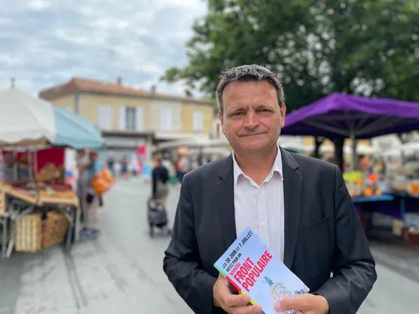
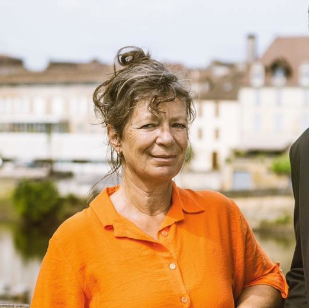

Notre programme
Télécharger le programme de Christophe CATHUS

Mathilde BACHE - suppléante
Nous contacter
L'union de la gauche, c'est le Nouveau Front Populaire !


avec le soutien de Place publique, Génération.s, NPA, GES, GRS, MRC, LRDG, L'engagement, GDS, Ensemble !, Parti de gauche, Picardie Debout, PEP, Révolution Écologique pour le Vivant (REV), Allons enfants, ADS, Nouvelle Donne, La Jeune Garde, Union démocratique bretonne (UDB), ESNT
Vous ne pouvez pas vous déplacer le 30 juin ou le 7 juillet prochain ?
Votez par procuration
Votre bureau de vote
- Vous ne savez pas quel est votre bureau de vote ?
- Vous n'êtes pas sûr·es d'être inscrit·e ?
Retrouvez vos informations pour voter les 30 juin et 7 juillet sur Service-Public.fr
Le 30 juin et le 7 juillet, votez et faites votez autour de vous !
Que vous soyez électeur ou électrice à Alles-sur-Dordogne, Badefols-sur-Dordogne, Baneuil, Bardou, Bayac, Beaumontois en Périgord, Beauregard-et-Bassac, Beleymas, Bergerac, Biron, Boisse, Bonneville-et-Saint-Avit-de-Fumadières, Bosset, Bouillac, Bouniagues, Bourniquel, Le Buisson-de-Cadouin, Calès, Campsegret, Capdrot, Carsac-de-Gurson, Cause-de-Clérans, Clermont-de-Beauregard, Colombier, Conne-de-Labarde, Cours-de-Pile, Couze-et-Saint-Front, Creysse, Cunèges, Douville, Eglise-Neuve-d'Issac, Eymet, Plaisance, Faurilles, FALSE, Flaugeac, Le Fleix, Fonroque, Fougueyrolles, Fraisse, Gageac-et-Rouillac, Gardonne, Gaugeac, Ginestet, Issac, Issigeac, La Force, Lalinde, Lamonzie-Montastruc, Lamonzie-Saint-Martin, Lamothe-Montravel, Lanquais, Lavalade, Laveyssière, Les Lèches, Lembras, Liorac-sur-Louyre, Lolme, Lunas, Marsalès, Maurens, Mauzac-et-Grand-Castang, Mescoules, Minzac, Molières, Monbazillac, Monestier, Monfaucon, Monmadalès, Monmarvès, Monpazier, Monsac, Monsaguel, Montagnac-la-Crempse, Montaut, Montazeau, Montcaret, Montferrand-du-Périgord, Montpeyroux, Mouleydier, Moulin-Neuf, Nastringues, Naussannes, Pomport, Pontours, Port-Sainte-Foy-et-Ponchapt, Pressignac-Vicq, Prigonrieux, Queyssac, Rampieux, Razac-d'Eymet, Razac-de-Saussignac, Ribagnac, Rouffignac-de-Sigoulès, Sadillac, Saint-Agne, Saint-Antoine-de-Breuilh, Saint-Aubin-de-Cadelech, Saint-Aubin-de-Lanquais, Saint-Avit-Rivière, Saint-Avit-Sénieur, Saint-Capraise-de-Lalinde, Saint-Capraise-d'Eymet, Saint-Cassien, Saint-Cernin-de-Labarde, Sainte-Croix, Sainte-Eulalie-d'Eymet, Saint-Félix-de-Villadeix, Saint-Georges-Blancaneix, Saint-Georges-de-Montclard, Saint-Géraud-de-Corps, Saint-Germain-et-Mons, Saint-Géry, Saint-Hilaire-d'Estissac, Sainte-Innocence, Saint-Jean-d'Estissac, Saint-Jean-d'Eyraud, Saint-Julien-de-Crempse, Saint-Julien-d'Eymet, Saint-Laurent-des-Vignes, Saint-Léon-d'Issigeac, Saint-Marcel-du-Périgord, Saint-Marcory, Saint-Martin-de-Gurson, Saint-Martin-des-Combes, Saint-Méard-de-Gurçon, Saint-Michel-de-Montaigne, Saint-Nexans, Saint-Perdoux, Saint-Pierre-d'Eyraud, Sainte-Radegonde, Saint-Rémy, Saint-Romain-de-Monpazier, Saint-Sauveur, Saint-Seurin-de-Prats, Saint-Vivien, Saussignac, Serres-et-Montguyard, Sigoulès, Singleyrac, Soulaures, Thénac, Urval, Varennes, Vélines, Verdon, Vergt-de-Biron, Villamblard ou Villefranche-de-Lonchat… Chaque vote compte pour empêcher l'extrême-droite d'arriver au pouvoir !